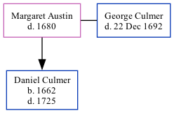

Margaret Austin was the 9 times great-grandmother of Nigel Horne and married George Culmer (with whom she had 1 child, Daniel) in Stourmouth, Kent, England on Jun 5, 16382.
During her life, she lived in Kent3.
She died in 1680 in Kent1 and was buried in Stourmouth on Dec 7, 16801.
Kent, England, Tyler Index to Parish Registers, 1538-1874 Online publication - Provo, UT, USA: Ancestry.com Operations, Inc., 2010. This collection was indexed by Ancestry World Archives Project contributors.Original data - Frank Watt Tyler. The Tyler Collection. Canterbury, Kent, England: The Institute of Herald
England, Select Marriages, 1538–1973 Ancestry.com Operations, Inc.
England, Select Marriages, 1538–1973 Ancestry.com Operations, Inc.
Family Tree

Map
Generated by Ged2Site. Last updated on Jul 20, 2025